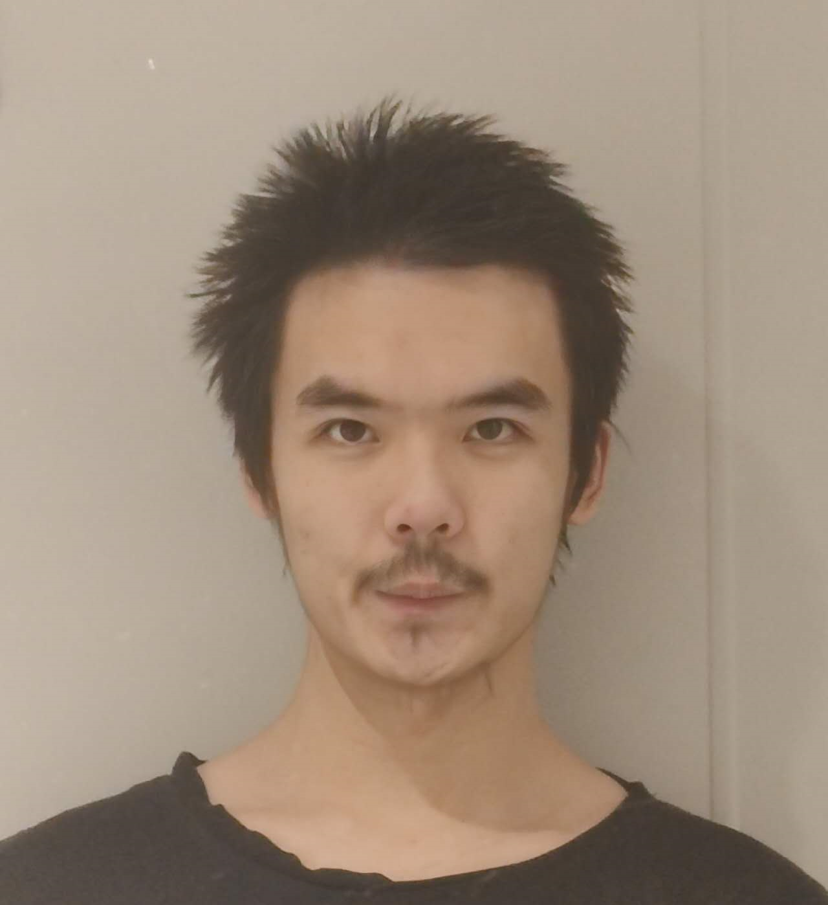

Hanqing Tian
Third-year Finance PhD student at the University of Melbourne. I study how machine learning and NLP can advance asset pricing and forecasting, and I probe the limitations and biases of large language models in financial contexts.
I also explore unconventional data sources (e.g., video) for economic and financial research.
Financial Machine Learning
Asset Pricing
NLP for Finance
LLM Evaluation
About
Welcome! I earned my bachelor's at the University of Melbourne and am now continuing at Melbourne as a PhD student. My work focuses on using large language models for stock price prediction and earnings forecasting while developing strategies to enhance reliability and efficiency for real-world use.